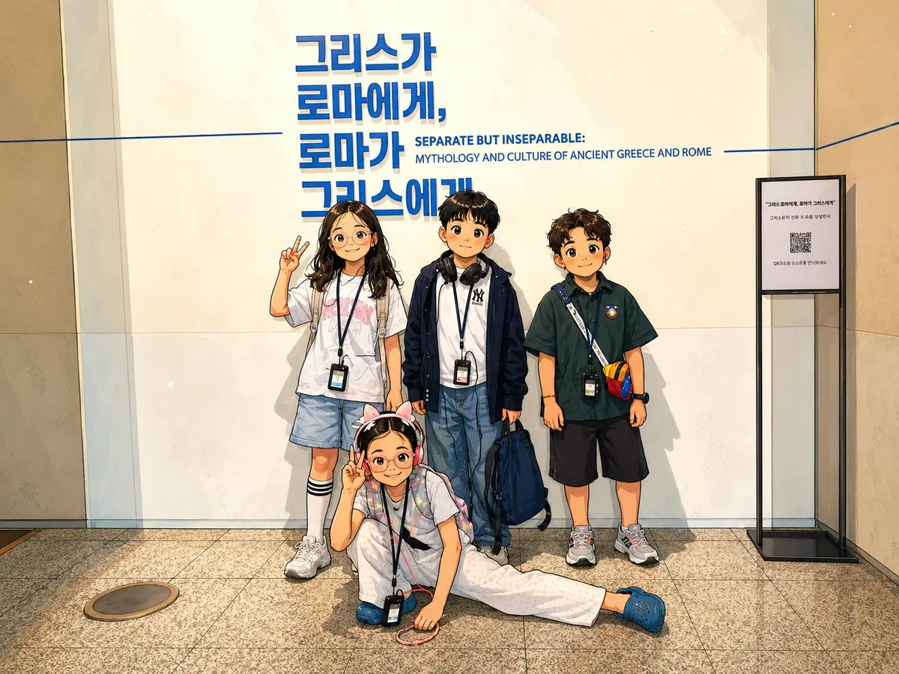
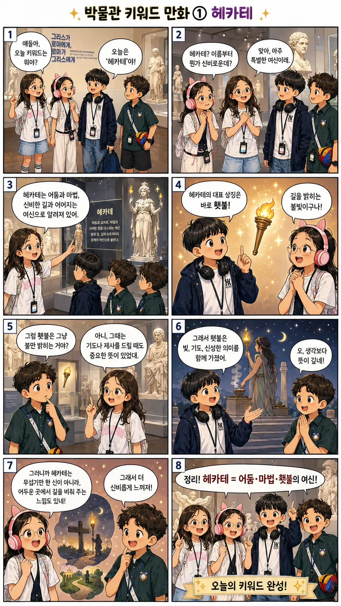
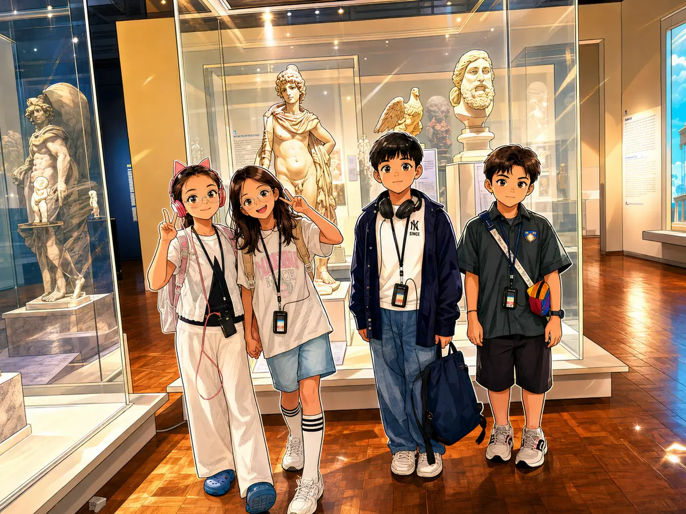
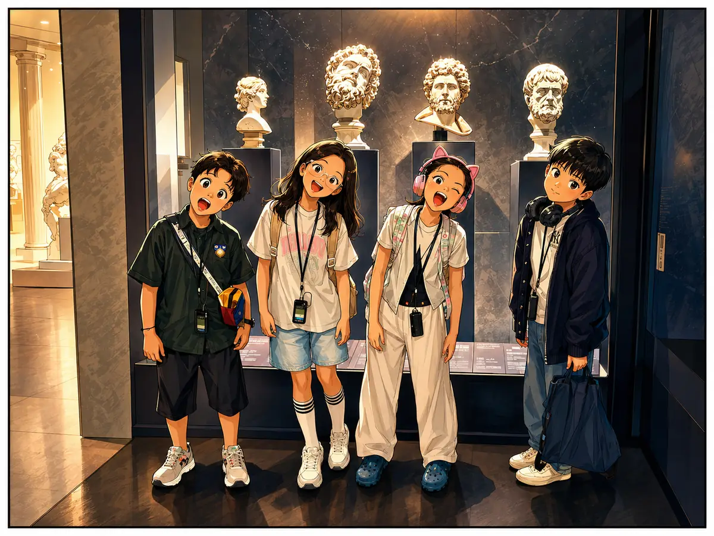

전시 입구에서
그리스와 로마의 시작
History Bridge Quiz
링크 공유형 모바일 웹 퀴즈앱
유물과 신화 속 장면을 따라가며, 그리스 문화가 로마로 이어진 흐름을 퀴즈로 알아봅니다.
Tip, 학습만화, 추억 앨범을 골라서 볼 수 있습니다.
퀴즈에서 모은 보석으로 앱 안의 기념품을 구매합니다.
구매한 기념품이 이곳에 보관됩니다. 모은 아이템을 확인하고, 배경권은 퀴즈 화면 꾸미기에 사용할 수 있습니다.
귀여운 벌 채집
5마리결과
키워드 카드
전체 챕터의 키워드 카드를 볼 수 있습니다.
선생님 tip
에블린 선생님의 tip
안녕하세요? 이 책은 사랑의 신 아모르를 소개하는 책입니다.
아모르는 사랑의 여신 비너스와 전쟁의 신 마르스의 아들이에요. 에로스에게는 작은 날개가 달려 있어요.
아모르의 상징물은 활과 화살이에요. 하지만 아모르는 두 가지 화살이 있어요. 황금 화살에 맞으면 사랑에 빠지고, 납 화살에 맞으면 사랑을 거부하거나 멀어지게 돼요.
또 아모르의 상징물은 햇불이에요. 사랑의 열정과 타오르는 감정을 상징해요. 또 다른 상징물은 장미예요. 아름다움, 사랑, 로맨스를 상징하는 꽃으로 아모르와 함께 자주 등장해요.
아모르의 상징물은 이것만 있지 않아요. 바로 비둘기예요. 순수한 사랑과 평화를 상징하며 아모르와 함께 그려져요.
비너스도 아모르처럼 사랑의 신이에요. 비너스는 맨몸으로 서서 두 손으로 머리카락을 잡고 있어요.
신화에 따르면 비너스는 바다의 거품에서 맨몸으로 태어났고 태어날 때부터 성인의 모습이에요.
비너스의 자세는 오른손은 가슴에 올려놓고 왼손은 흘러내리는 치마를 잡는 거예요!
헌 선생님의 tip
디오노시스라는 신은 포도주와 술과 포도의 신이야.
포도야? 포도주야? 둘 다야. 포도에서 포도주가 나오고, 포도주와 술이 디오노시스와 연결되기 때문이야.
그리고 그 디오노시스의 스승을 사일레노스라고 해. 또 그의 추종자들을 사일렌스라고 하기도 해. 여기서는 헷갈리면 안 돼.
사일레노스는 디오노시스의 스승이고, 사일렌스는 그를 따르는 무리처럼 볼 수 있어.
이제, 헥헤이트란 여신에 대해서 설명해 볼게.
이 여신은 아주 특별하고, 사람들 사이에서 헥헤이트의 뜻과 의미에 대한 논쟁이 많이 벌어지고 있는 여신이지. 내가 차근차근 풀이해 줄게.
헥헤이트는 저세상에서 온 요정 같은 존재야. 하지만 사람들이 그걸 신으로 알고 있지. 우선, 물론 요정과 신 둘 다 맞아.
헥헤이트는 그래서 어둠의 마법과 어두운 곳을 자기 본거지로 삼아. 그리고 그 헥헤이트의 상징 물건은 횃불이야.
이때 당시에는 횃불이 불을 밝히는 것뿐만 아니라, 정치적이고 종교적인 의미도 많았어. 거기에 불을 붙이고, 신성한 기름을 넣어서 불을 밝힌 다음, 신들에게 기도하거나 제사를 지낼 때도 많이 사용됐어.
이번에는 제우스와 티탄들의 전쟁 이야기를 해 볼게.
최고급 무기를 가진 제우스의 군대도 문제가 있었다.
자기들이 있던 데는 너무 지대가 낮은 곳이었다. 그래서 밤에 마운트 올림포스라는 산에 올라갔다.
낮이 되자 제우스는 번개로, 포세이돈은 바람과 물로, 하데스는 유령과 악령으로 공격을 퍼부었다.
그래서 오르티스 군대는 무너졌다. 그렇게 해서 제우스는 아버지를 산산조각 내고, 아버지를 다시 한 번 바다에 던져 버렸다.
우라노스와 같은 최후를 맞이하게 되었던 거다. 그리고 우라노스가 얘기했던 저주도 실제가 되었다.
아, 그리고 올림포스의 열두 신 이야기를 해 보자.
열두 신은 일단 아테나부터 시작하자.
생각하는 힘과 기억력이 좋은 타이탄 미티스가 있었다. 제우스가 미티스와 결혼해서 낳은 아이가 아테나였다.
하지만 미티스가 낳은 아들은 제우스보다, 아버지보다 강한 아이가 될 것이라는 신탁이 있었다.
그래서 제우스는 미티스를 입으로 빨아들여 버렸다. 마치 크로노스처럼 말이다. 그리고 다른 신들에게 미안하다고 했다.
하지만 아테나와 미티스는 아직도 제우스의 몸속에 있었다.
그런데 아테나는 제우스의 목뼈를 잡고 두개골 안으로 쏙 들어갔다.
그다음에 제우스의 두개골에 막 주먹을 날리기 시작했다.
제우스가 아침 식사를 하고 있을 때, 아테나는 아주 세게 두드리면서 말했다.
“나가고 싶어! 나가고 싶어!”
아테나는 세게 두드렸고, 결국 제우스의 머리는 식사하는 도중에 갈라져 버렸다.
그렇게 제우스의 두개골 안에서 아테나가 나오게 되었다. 하지만 미티스는 제우스의 뱃속에서 죽었다.
이제 아르테미스 이야기를 해 보자.
아르테미스는 제우스의 행태 때문에 태어난 신이라고 볼 수 있다.
헤라의 노여움을 산 여자가 있었다. 그 여자는 제우스의 부인이 될 여자였다. 인간 부인이었다.
헤라는 올림포스에 있는 부인이었지만, 제우스는 그리스의 여자들을 쫓아다녔다. 그중 헤라가 눈치챈 사람들 중 한 사람이 있었다.
헤라는 그 여자에게 저주를 내렸다.
어떤 땅, 어떤 뿌리가 있는 땅이든 이 여자를 받아주지 말라. 섬도 안 된다. 하늘도 안 된다. 이런 저주를 내린 것이다.
그러자 아이를 낳아야 했던 레미스는 뿌리가 없는 섬에 도착하여, 거기에서 안식을 취했다.
거기에서 아이 둘이 태어났는데, 그게 바로 아르테미스와 아폴로다.
둘 다 아주 중요한 신이었다.
이제 마지막으로 디오니소스의 탄생을 봅시다.
디오니소스는 아주 이상하게 태어난 아이입니다. 또 제우스의 인간 여자친구 사이에서 태어난 아이입니다.
하지만 그 인간 여자친구는 너무 자만해서, 자기가 헤라처럼 제우스의 신 형태를 볼 수 있다고 말했다.
그런데 신의 형태는 인간이 보면 바로 타버릴 수 있기 때문에 아주 조심해야 한다.
하지만 그걸 모른 제우스의 여자친구는 결국 타죽어 버렸다.
하지만 그 안에 있던 아이는 제우스의 자식이니까, 제우스의 피가 들어 있어서 어떻게든 살아남았다.
제우스는 그 아이를 가엾게 여겨, 자기 허벅지를 잘라서 아이를 그 안에 쑤셔 넣었다.
그리고 8년 뒤에 그 아이를 꺼내 보니 이미 성체가 되어 있었다.
그게 바로 디오니소스다.
선생님 tip
미아 선생님의 tip
| 구분 | 구석기 시대 | 신석기 시대 | 청동기 시대 |
|---|---|---|---|
| 대표 도구 | 뗀석기 주먹도끼 슴베찌르개 |
간석기 빗살무늬토기 가락바퀴 |
청동기 반달돌칼 민무늬토기 |
| 경제생활 | 사냥과 채집 이동 생활 |
농경과 목축 시작 정착 생활 |
벼농사 확대 사유 재산 발생 |
| 주거 | 동굴 막집 바위 그늘 |
강가와 바닷가 움집 조개무지 |
구릉지 배산임수 지역 움집 |
| 사회 | 무리 사회 평등한 공동체 |
씨족 중심 부족 사회 |
군장 출현 지배자·피지배자 분화 계급 발생 |
| 대표 유적 | 연천 전곡리 공주 석장리 |
서울 암사동 부산 동삼동 |
고인돌 울산 반구대 암각화 |
사람들이 농경과 목축을 시작하면서 이동 생활에서 벗어나 한곳에 정착하고, 생산과 생활 방식이 크게 달라진 변화를 말합니다.
구석기 시대는 뗀석기와 주먹도끼 등을 사용했고, 경제는 사냥과 채집을 중심으로 이동 생활을 했으며 동굴이나 막집에서 거주했습니다. 대표적인 유적은 연천 전곡리와 공주 석장리가 있습니다.
신석기 시대는 간석기와 빗살무늬토기를 사용하고 농경과 목축을 시작하며 정착 생활을 했습니다. 씨족 중심의 사회였으며, 서울 암사동과 부산 동삼동이 대표적입니다. 이곳에서는 농경의 발달로 정착 생활이 자리 잡은 신석기 혁명이 일어났습니다.
마지막으로 청동기 시대는 청동기 제품과 반달돌칼을 사용하고 벼농사가 확대되면서 사유 재산과 계급이 발생했습니다. 지배자와 피지배자의 문화가 나타났고, 고인돌과 울산 반구대 암각화 등이 있습니다.
루크 선생님의 tip
나는 평소에 무기에 관심이 많았어.
그래서 국립중앙박물관의 선사관에서도 무기를 유심히 보았어.
선사관에는 고조선 이후, 삼한이 있던 시대의 무기들이 기억에 남아.
칼, 몽둥이 모양의 무기들이 발견되었는데, 선사시대의 무기는 지금 무기 모양과 비슷하지만 조금 다른 점도 있어.
손잡이에 날개 모양의 무늬가 발견되었고, 지금 무기들처럼 날카롭지는 못해.
왜냐하면 거푸집을 이용해서 철과 청동으로 만든 무기라서 그런 것 같아.
그리고 손잡이와 칼날이 분리형으로 되어 있는 게 흥미로웠어!
선생님들의 학습 만화
네 명의 선생님이 박물관에서 헤카테라는 키워드를 대화로 설명하는 8컷 만화입니다.

선생님들의 추억 앨범
네 명의 선생님들이 박물관에서 남긴 특별한 순간



기념품샵
선생님 퀴즈 정답과 벌 10마리 변환으로 얻은 보석을 사용할 수 있습니다. 에블린·헌 선생님 tip과 연결된 기념품을 모아 보세요.
내 보관함에는 지금까지 구매한 모든 챕터의 기념품이 함께 모입니다. 배경권은 해당 챕터에서만 적용됩니다.